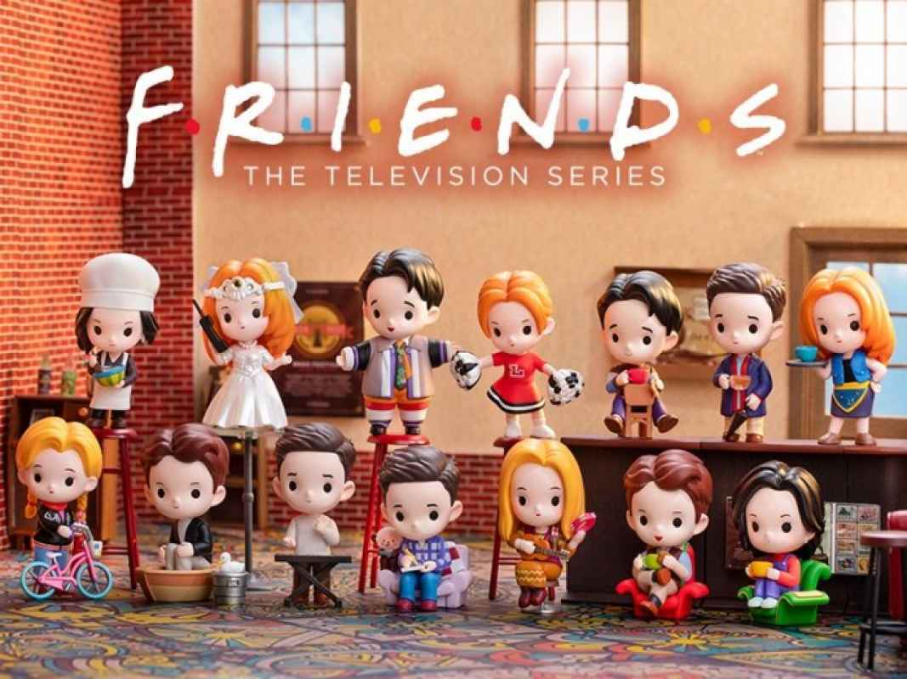

<doctype! html>
<html>
<head>
    <title>Website Pop Mart</title>
    <link rel="stylesheet" href="css/cssproject.css">
</head>
<body>
  <header>
    <div class="navbar">
      
      <a href="index.html" style="margin-top: 7px;">Home</a>
      <a href="about.html" style="margin-top: 7px;">About</a>
      <div class="dropdown">
        <button class="dropbtn" style="margin-top: 7px;">Series</button>
        <div class="dropdown-content">
          <a href="series_hirono.html">Hirono</a>
          <a href="series_dimoo.html">DIMOO</a>
          <a href="friends.html">Friends</a>
        </div>
      </div>
    </div>
</header>

    <main>
      <section>
        <article class="article-a">
          <div class="slideshow-container" style="margin-left: 25%; margin-bottom: 0;">
            <div class="mySlides fade">
              <div class="numbertext">1 / 3</div>
              
            </div>
          
            <div class="mySlides fade">
              <div class="numbertext">2 / 3</div>
              
            </div>
          
            <div class="mySlides fade">
              <div class="numbertext">3 / 3</div>
              
            </div>
          
            <!-- Next and previous buttons -->
            <a class="prev" onclick="plusSlides(-1)">&#10094;</a>
            <a class="next" onclick="plusSlides(1)">&#10095;</a>
          </div>
          
          <!-- The dots/circles -->
          <div style="text-align:center">
            <span class="dot" onclick="currentSlide(1)"></span>
            <span class="dot" onclick="currentSlide(2)"></span>
            <span class="dot" onclick="currentSlide(3)"></span>
          </div>

          <script>
            let slideIndex = 1;
            showSlides(slideIndex);

            // Next/previous controls
            function plusSlides(n) {
              showSlides(slideIndex += n);
            }

            function currentSlide(n) {
              showSlides(slideIndex = n);
            }

            function showSlides(n) {
              let i;
              let slides = document.getElementsByClassName("mySlides");
              let dots = document.getElementsByClassName("dot");
              if (n > slides.length) {slideIndex = 1}
              if (n < 1) {slideIndex = slides.length}
              for (i = 0; i < slides.length; i++) {
                slides[i].style.display = "none";
              }
              for (i = 0; i < dots.length; i++) {
                dots[i].className = dots[i].className.replace(" active", "");
              }
              slides[slideIndex-1].style.display = "block";
              dots[slideIndex-1].className += " active";
            }
          </script>
        </article>  
      <hr>
      
        <article class="article-b">
          <center><h3>Everyones Favorite!</h3></center>
          <figure class="picture" style="float: left; margin-right: 15%; margin-left: 5%;">
            <a href="series_hirono.html"></a>
            <p class="desc">Hirono</p>
          </figure>
          <figure class="picture" style="float: left; margin-right: 15%;">
            <a href="series_dimoo.html"></a>
            <p class="desc">DIMOO</p>
          </figure>
          <figure class="picture" style="float: left; margin-left: 5%;">
            <a href="friends.html"></a>
            <p class="desc">Friends</p>
          </figure>
        </article>
      <hr>  

      <article class="article-c">
          <center><h2>PopMart Gandaria City, Jakarta</h2></center>
          <center><iframe src="https://www.google.com/maps/embed?pb=!1m14!1m8!1m3!1d15864.599688117454!2d106.
        7834535!3d-6.2439646!3m2!1i1024!2i768!4f13.1!3m3!1m2!1s0x2e69f10060e8969d%3A0xcc8ecb79bf3812f1!
        2sPop%20Mart!5e0!3m2!1sen!2sid!4v1728348718618!5m2!1sen!2sid" width="600" height="450" 
        style="border:0; flex: 1; margin-left: 20px; " allowfullscreen="" loading="lazy" referrerpolicy="no-referrer-when-downgrade"></iframe></center>
      </article>  
    </section>
    </main>
    </body>
    <hr>

    <footer height="50%">
      <article class="sosmed">
        <h2>Follow us!</h2>
          <a href="https://www.instagram.com/popmartglobal?utm_source=ig_web_button_share_sheet&igsh=ZDNlZDc0MzIxNw==" class="fa fa-instagram">
            </a>
          <a href="https://www.facebook.com/popmartglobal?_rdc=1&_rdr" class="fa fa-facebook"></a>
          <a href="https://x.com/POPMARTGlobal" class="fa fa-twitter"></a>
      </article>
      <hr>
      <p style="text-align: center; height: 10%;">&copy; 2024 POPMART All Rights Reserved</p>
    </footer>